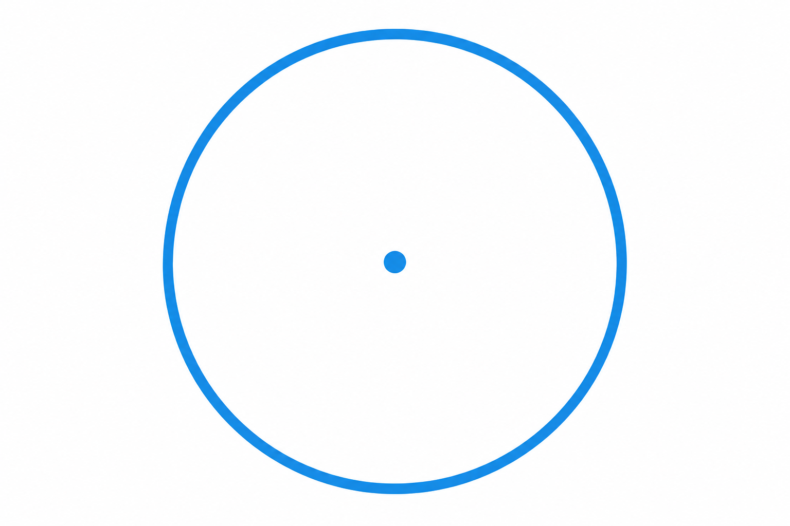

Co to jest? Що це?
Okrąg to sama linia — brzeg koła, bez wnętrza. Jak obwódka talerza, nie cały talerz.
Коло — сама лінія: край круга, без нутра. Як обідок тарілки, не вся тарілка.
Jak w szkole? Як у школі?
Zapamiętaj: okrąg = brzeg; koło = brzeg + wnętrze.
Запам'ятай: коло = край; круг = край + нутро.
Przykład z życia Приклад з життя
Obręcz od roweru to okrąg — sama linia, bez „środka wypełnionego”.
Обідок велосипеда — коло — лише лінія, без «заповненої середини».
linia w równej odległości od środka